Sito web condominiale e diritto di accesso ai documenti di spesa
Il Tribunale di Milano affronta un tema pratico ma delicato: quando il condominio dispone di un sito web regolarmente istituito, l'amministratore non è tenuto ad allegare i documen…
Tempo tuta e formazione obbligatoria: quando contano come orario di lavoro
La Cassazione torna sul cosiddetto tempo tuta e sulla formazione obbligatoria: entrambi rientrano nell'orario di lavoro quando l'attività è imposta e controllata dal datore. La pro…
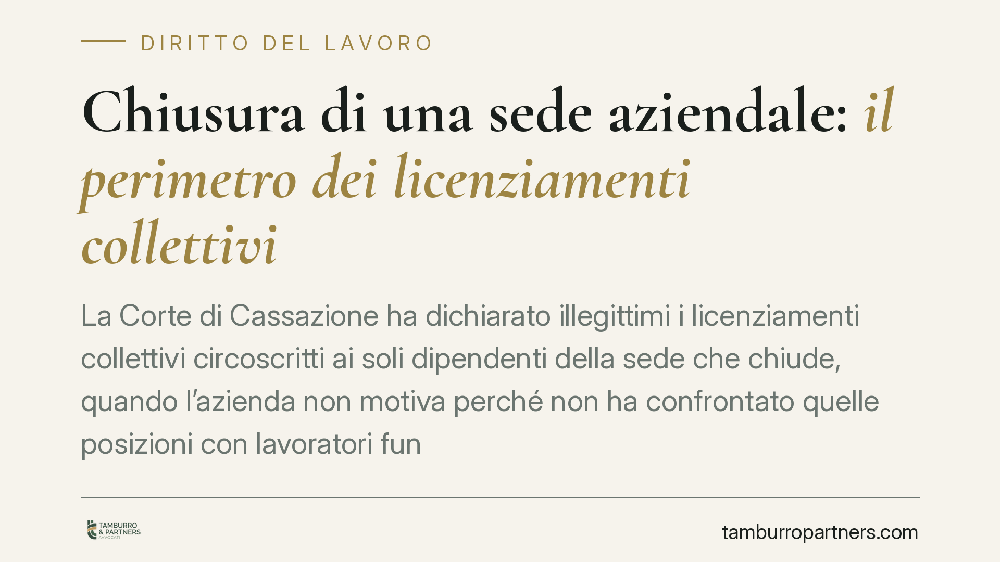
Chiusura di una sede aziendale e licenziamento collettivo: i limiti fissati dalla Cassazione
Chiudere una sede non autorizza a licenziare in automatico solo chi vi lavora. La Cassazione ha ribadito che, in un licenziamento collettivo, la platea dei lavoratori interessati v…
Delibere condominiali: i limiti alla discrezionalità della maggioranza
Nel condominio la maggioranza decide, ma non decide tutto. Esiste una linea di confine tra le scelte di merito, insindacabili dal giudice, e le decisioni viziate, che il singolo co…
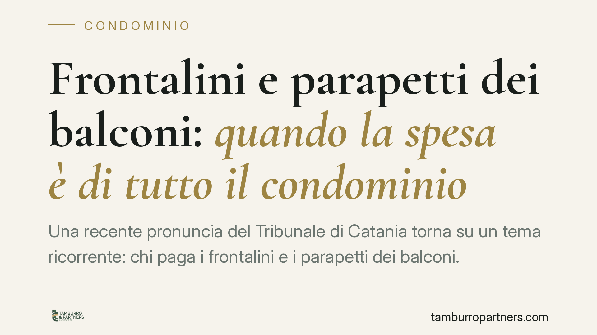
Frontalini e parapetti dei balconi: quando la spesa è di tutto il condominio
Una recente pronuncia del Tribunale di Catania torna su un tema ricorrente: chi paga i frontalini e i parapetti dei balconi. Quando questi elementi contribuiscono al decoro archite…
Sospendere una delibera condominiale: guida pratica
Chi contesta una decisione dell'assemblea può chiederne al giudice la sospensione, evitando che produca effetti mentre pende il giudizio di impugnazione. È uno strumento di tutela …
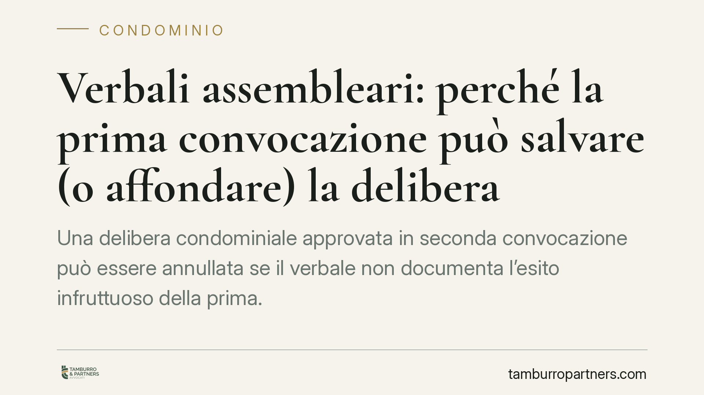
Verbali assembleari: perché la prima convocazione può salvare (o affondare) la delibera
Una delibera condominiale approvata in seconda convocazione può essere annullata se il verbale non documenta l'esito infruttuoso della prima. Un dettaglio spesso trascurato che, se…
Incidente con veicolo senza revisione: chi risarcisce e chi paga davvero
La revisione scaduta non fa venir meno la copertura assicurativa. In caso di sinistro, la compagnia risarcisce comunque il danneggiato, ma può poi rivalersi sul proprietario del me…
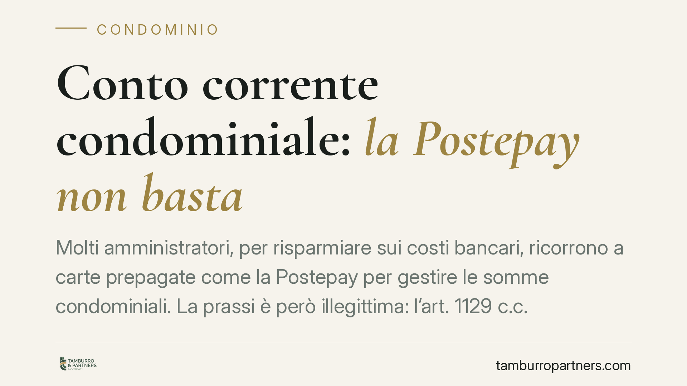
Conto corrente condominiale: la Postepay non basta
Molti amministratori, per risparmiare sui costi bancari, ricorrono a carte prepagate come la Postepay per gestire le somme condominiali. La prassi è però illegittima: l'art. 1129 c…
Conto cointestato: prelievi e divisione dei fondi tra i titolari
Chi cointesta un conto corrente crede spesso che il denaro versato resti "suo". Non è così sul piano dei rapporti interni. Un recente orientamento della giurisprudenza di merito ri…
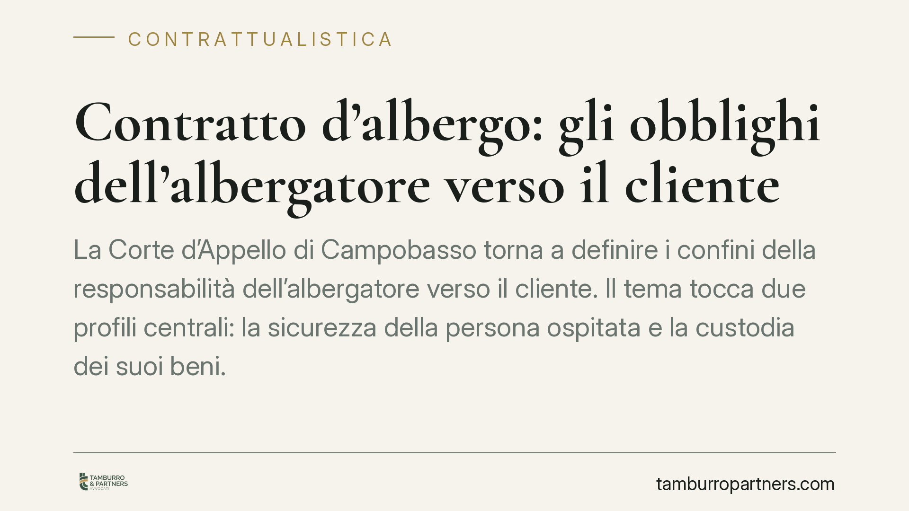
Contratto d'albergo: gli obblighi dell'albergatore verso il cliente
La Corte d'Appello di Campobasso torna a definire i confini della responsabilità dell'albergatore verso il cliente. Il tema tocca due profili centrali: la sicurezza della persona o…
Quota 103 nel 2026: chi ha maturato i requisiti nel 2025 conserva il diritto
Quota 103 non viene prorogata per il 2026, ma il diritto già maturato non si perde. Chi ha raggiunto i requisiti anagrafici e contributivi entro il 31 dicembre 2025 può ancora acce…
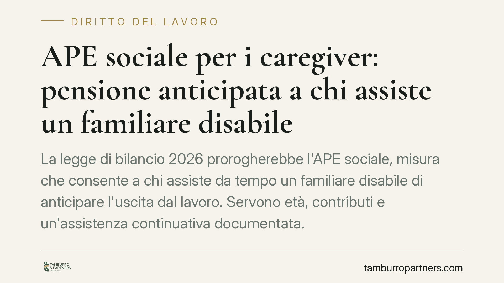
APE sociale per i caregiver: pensione anticipata a chi assiste un familiare disabile
La legge di bilancio 2026 prorogherebbe l'APE sociale, misura che consente a chi assiste da tempo un familiare disabile di anticipare l'uscita dal lavoro. Servono età, contributi e…
Perizia contrattuale assicurativa e prescrizione: la Cassazione ridefinisce l'effetto interruttivo
La Cassazione precisa che la perizia contrattuale prevista nei contratti assicurativi non interrompe la prescrizione solo al suo avvio, ma per l'intera durata delle operazioni peri…
NASpI e dichiarazione dei redditi: obblighi e come indicarla
La NASpI, indennità di disoccupazione erogata dall'INPS, è a tutti gli effetti reddito imponibile ai fini IRPEF. Va riportata in dichiarazione, anche quando percepita in un'unica s…
Curriculum falso: cosa rischia davvero il lavoratore
Gonfiare titoli, inventare esperienze o dichiarare qualifiche mai conseguite nel curriculum non è un dettaglio senza conseguenze. A seconda del contenuto falso e del contesto, le r…
Verbale di condominio via PEC: notifica invalida se l'indirizzo è di un terzo
La Corte di Cassazione ha stabilito che l'invio del verbale assembleare via PEC a un indirizzo non direttamente riferibile al condomino assente non attiva la presunzione di conosce…
Stipendi errati nella PA: quando scatta l'obbligo di restituzione
La Pubblica Amministrazione che eroga somme non dovute può recuperarle dal dipendente, anche se questi le ha percepite in buona fede. La buona fede incide sulle modalità del recupe…
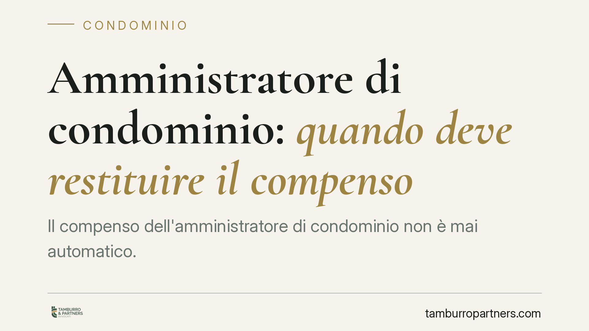
Amministratore di condominio: quando deve restituire il compenso
Il compenso dell'amministratore di condominio non è mai automatico. Se la nomina è nulla, se manca la specificazione analitica prevista dalla legge o se la carica prosegue senza un…
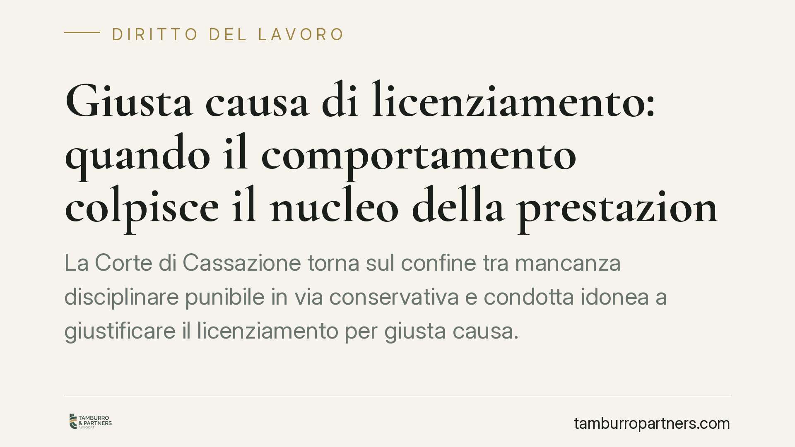
Giusta causa di licenziamento: quando il comportamento colpisce il nucleo della prestazione
La Corte di Cassazione torna sul confine tra mancanza disciplinare punibile in via conservativa e condotta idonea a giustificare il licenziamento per giusta causa. Il caso di un ad…
Infiltrazioni dal vicino: quando è possibile accedere all'immobile per la riparazione
Un'infiltrazione proveniente dall'appartamento sovrastante è tra i conflitti condominiali più frequenti. Ma il proprietario danneggiato non può entrare in casa altrui di propria in…
Diffida per il pagamento delle quote condominiali: come si scrive
Quando un condomino non versa i contributi, l'amministratore deve muoversi con ordine. La diffida quote condominiali è il primo passo formale prima del decreto ingiuntivo. Vediamo …
Donazioni agli enti del Terzo settore e rischio accertamento fiscale
Donare a una ONLUS o a un ente del Terzo settore non fa scattare in automatico un accertamento. Tuttavia una liberalità sproporzionata rispetto al reddito dichiarato può attirare l…
Infiltrazioni in condominio: perché il danneggiato può ricevere meno
Chi subisce infiltrazioni dalle parti comuni non sempre ottiene il risarcimento integrale. La Cassazione ha chiarito che il condomino danneggiato è al tempo stesso comproprietario …
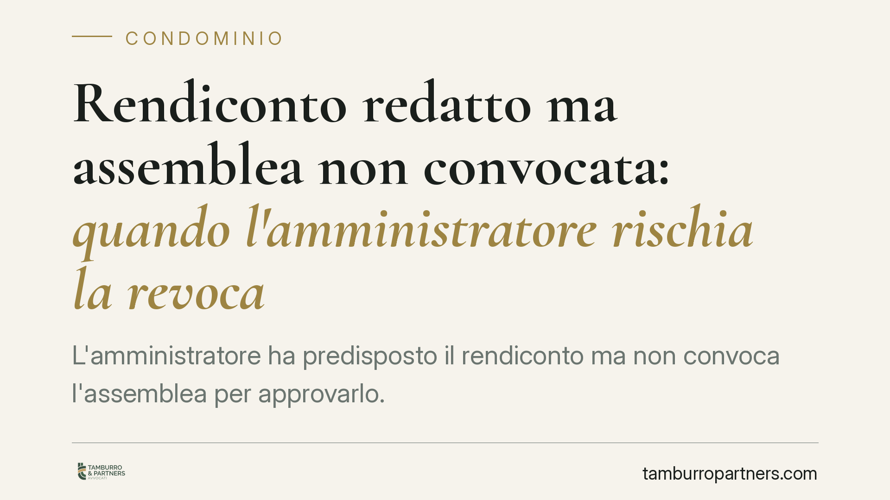
Rendiconto redatto ma assemblea non convocata: quando l'amministratore rischia la revoca
L'amministratore ha predisposto il rendiconto ma non convoca l'assemblea per approvarlo. È motivo di revoca giudiziale? La giurisprudenza di merito richiede un'analisi in concreto:…
Quando è nulla la locazione transitoria
La locazione transitoria serve a coprire esigenze temporanee, ma non è uno strumento libero: se manca il presupposto o si abusa dello schema, il contratto è nullo nella parte trans…
Provvigione del mediatore immobiliare: quando matura il diritto
La provvigione del mediatore immobiliare è tra le fonti di contenzioso più frequenti nella compravendita. Il diritto sorge quando l'affare è concluso per effetto dell'intervento de…
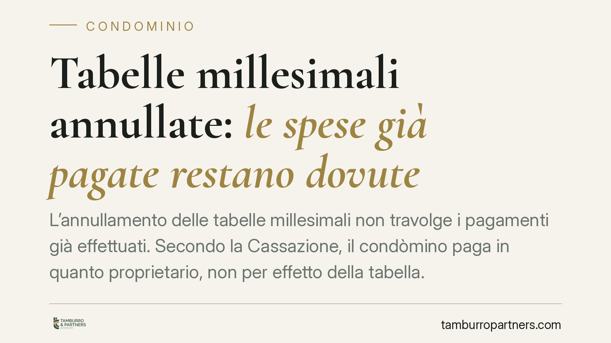
Tabelle millesimali annullate: le spese già pagate restano dovute
L'annullamento delle tabelle millesimali non travolge i pagamenti già effettuati. Secondo la Cassazione, il condòmino paga in quanto proprietario, non per effetto della tabella. Ch…
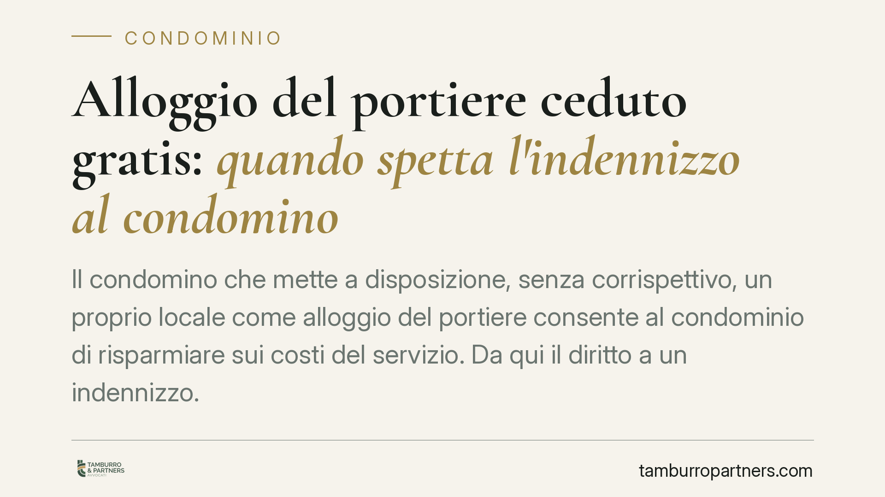
Alloggio del portiere ceduto gratis: quando spetta l'indennizzo al condomino
Il condomino che mette a disposizione, senza corrispettivo, un proprio locale come alloggio del portiere consente al condominio di risparmiare sui costi del servizio. Da qui il dir…
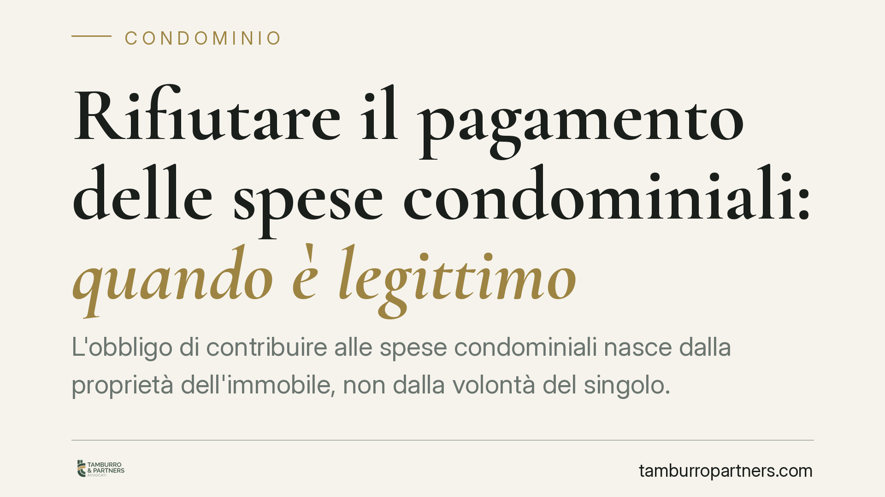
Rifiutare il pagamento delle spese condominiali: quando è legittimo
L'obbligo di contribuire alle spese condominiali nasce dalla proprietà dell'immobile, non dalla volontà del singolo. Esistono però situazioni in cui il rifiuto del pagamento è legi…